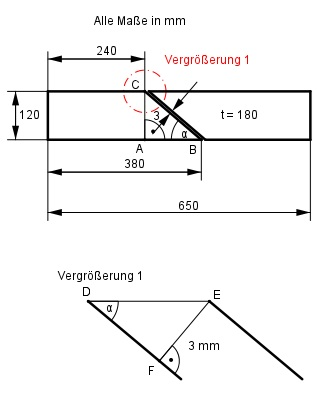

Aufgabe 106 Wie groß ist das Volumen V des größeren Teils des Profilstahls nach dem Trennen?  Im Dreieck ABC gilt: AB = 380 mm - 240 mm = 140 mm AC 120 mm tan α = ---- = ---------- = 0,8571 --> α = 40,6° AB 140 mm Im Dreieck DEF gilt: FE sin α = ---- |*DE DE sin α * DE = FE |:sin α FE 3 mm 3 mm DE = ------ = ----------- = --------- = 4,6 mm in α sin 40,6° 0,6508 Volumen V1 linkes Teil, Grundfläche ist ein Trapez: V1 = G1 * t 240 mm + 380 mm V1 = ------------------- * 120 mm * 180 mm = 6 696 000 mm³ 2 V1 = 6 696 cm³ Volumen V2 rechtes Teil, Grundfläche ist ein Trapez: parallele Trapezseiten: 650 mm - 240 mm - 4,6 mm = 405,4 mm 650 mm - 380 mm - 4,6 mm = 265,4 mm V2 = G2 * t 405,4 mm + 265,4 mm V2 = ----------------------- * 120 mm * 180 mm = 7 244 640 mm³ 2 V2 = 7 245 cm³